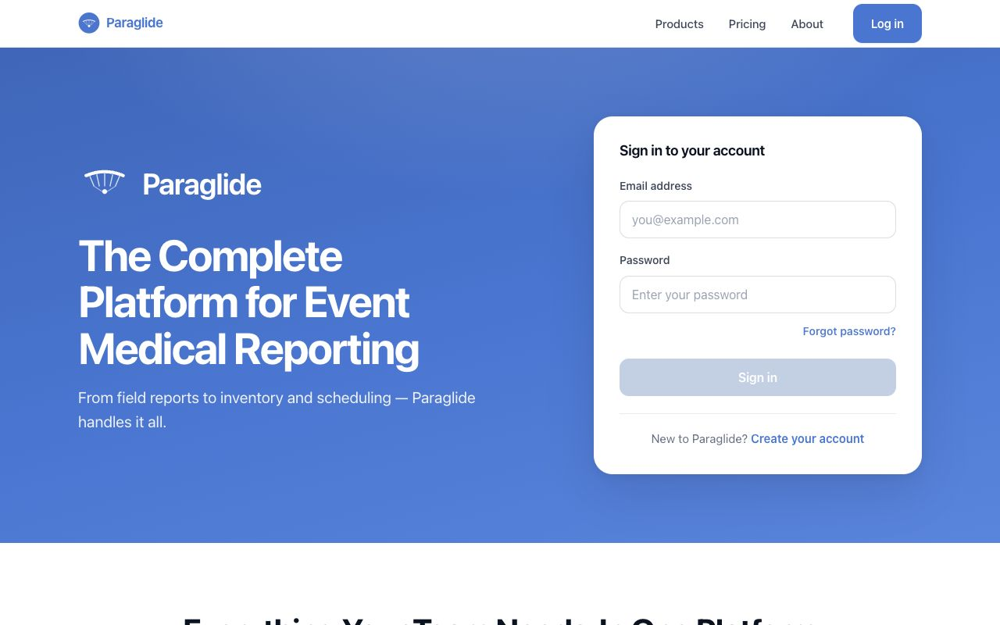

Co-Founder · 2025 – Present
Paraglide
Electronic patient care records for EMS crews who work where the signal doesn't.
Snap a photo of a paper form and it's digitized; fill out a report offline and it syncs, encrypted, when you reconnect.
paraglide-app.com

Visit paraglide-app.com ↗
In progress · Nov 2026
Do batteries tame ERCOT's evening price spikes?
Battery storage in Texas has grown fast. Have evening price spikes gotten smaller, rarer, or shorter as a result,
and what does that mean for grid reliability policy? An analysis of public ERCOT, EIA, and PUCT data from 2021 to today.
Pipeline & methodsRerunnable ERCOT, EIA, and PUCT pipeline with a reproducible README.
Live dashboardEvening prices, battery output, and price spreads, refreshed daily.
Policy memoTwo pages for a non-technical reader: the finding, three charts, caveats.